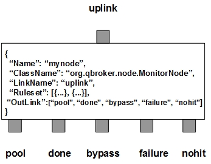

MonitorNode is a monitor container hosting dynamic monitor instances. It listens to an input XQueue for JMS messages as requests to monitor certain occurrences. If the message contains a request for a new monitor, it will create the monitor instance according to the ruleset and the content. Upon success, the incoming message will be routed to the outlink of bypass. If it fails to create the object, the message will be routed to the outlink of failure. If there is no ruleset to handle the message, it will be routed to the outlink of nohit. Meanwhile, MonitorNode periodically sends all active monitor instances as tasks to the outlink of pool. On the other end of the outlink, a number of MonitorPersisters will be listening on the outlink for tasks. They will run each monitor tasks and updates the results for the tasks. Each task will be collected for evaluations on its result. MonitorNode will apply the predefined EventPattern on the ruleset to chech the result. If the result is as expected, MonitorNode will generate a new message and routes it to the outlink of done. Then the monitor will be terminated and the monitor instance will be destroyed.
MonitorNode also contains a number of predefined rulesets. These rulesets categorize messages into non-overlapping groups via the filters. Therefore, each rule defines a unique message group. If a ruleset is not of bypass, it is supposed to define a template to construct properties for new monitor instances. It also contains multiple parameters for the node to manage active monitor instances. For example, TimeToLive specifies the lifetime in seconds of the new monitor instance. Once the instance passes that time span, MonitorNode will escalate the final event and terminates the instance. Option is another parameter which controls when to deliver the original request. By default, it is zero and there is no wait on the final event. If it is 1, MonitorNode will hold the request and waits until the final event is escalated. Heartbeat determines how often to run the monitor instance. The non-bypass rulesets may also have a list of EventPatterns to determine when to escalate the final event for the occurrence and to terminate the request. The total number of active occurrences is stored into the RULE_PEND field. For those messages falling off all defined rulesets, MonitorNode always creates an extra ruleset, nohit, to handle them. Therefore all the nohit messages will be routed to the outlink of nohit.
You are free to choose any names for the five fixed outlinks. But MonitorNode always assumes the first outlink for pool, the second for done, the third for bypass, the fourth for failure and the last for nohit.
Apart from the common properties, there are two implementation specific properties for MonitorNode.
| Property Name | Data Type | Requirement | Description | Examples |
|---|---|---|---|---|
| Heartbeat | integer | optional | interval in sec to dispatch | 120 (default: 60) |
| RCField | string | optional | name of the field to store return code |
The monitor operation is executed via the pre-defined rulesets. Therefore, the configuration of the rulesets is critical to the operations of MonitorNode. Here are complete properties of rulesets for MonitorNode.
| Property Name | Data Type | Requirement | Description | Examples |
|---|---|---|---|---|
| Name | alphanumeric with no spaces | mandatory | name of the ruleset | event |
| TimeToLive | integer | optional | max number seconds for a monitor to be active | 36000 (default: 0 for evergreen) |
| Heartbeat | integer | optional | interval to dispatch monitor tasks | 300 (default is set by the node) |
| Capacity | integer | optional | max number of active monitors | 24 (default: 64) |
| Option | integer of 0 or 1 | optional | on-wait option controling when to deliver the original messages | 1 (default: 0 for no wait) |
| MaxRetry | integer | optional | max retry on failed tasks | 1 (default: 2) |
| EventPattern | list | optional | list of EventPattern groups on monitor events to terminate monitors | see example |
| Monitor | map | mandatory for monitors only | configuration template of monitors | see example |
| JMSPropertyGroup | list | optional | list of pattern groups on properties to select messages | see example |
| XJMSPropertyGroup | list | optional | list of pattern groups on properties to exclude messages | see example |
| PatternGroup | list | optional | list of pattern groups on body to select messages | see example |
| XPatternGroup | list | optional | list of pattern groups on body to exclude messages | see example |
| StringProperty | map | optional | for logging on properties of messages | see example |
| DisplayMask | integer | optional | display mask for logging | 6 (default: 0) |
Here is an example of MonitorNode:
{
"Name": "node_monitor",
"ClassName": "org.qbroker.node.MonitorNode",
"Operation": "monitor",
"LinkName": "monitor",
"Capacity": "32",
"DisplayMask": "0",
"Heartbeat": "300",
"Debug": "31",
"Ruleset": [{
"Name": "proxy",
"JMSPropertyGroup": [{
"AssetID": "^\\d+$",
"Type": "^8$",
"DirName": ".",
"ZipCode": "^\\d\\d\\d$"
}],
"TimeToLive": "14400",
"Heartbeat": "300",
"Option": "1",
"MaxRetry": "3",
"Capacity": "24",
"DisplayMask": "71",
"StringProperty": {
"FileName": "",
"AssetID": "",
"Type": "",
"ZipCode": ""
},
"Monitor": {
"Name": "age_##AssetID##",
"ClassName": "org.qbroker.monitor.AgeMonitor",
"Site": "FAM",
"Type": "AgeMonitor",
"Category": "MONITOR",
"Description": "wait on the file",
"URI": "script:///fsfileinfo",
"Script": "/opt/qbroker/bin/fileinfo.sh ##DirName##/8/main/##ZipCode##/##AssetID##.8",
"Timeout": "45",
"Pattern": "\\s+Last Modification: (\\d\\d-\\w+-\\d\\d\\d\\d \\d\\d:\\d\\d:\\d\\d)",
"DateFormat": "dd-MMM-yyyy HH:mm:ss",
"Step": "1",
"Tolerance": "0",
"MaxRetry": "2",
"MaxPage": "1",
"ExceptionTolerance": "-1",
"ActiveTime": {
"TimeWindow": [{
"Interval": "00:00:00-24:00:00",
"Threshold": "-1800"
}]
}
},
"EventPattern": [{
"status": "^(OCCURRED|Occurred)$"
}]
},{
"Name": "avi",
"JMSPropertyGroup": [{
"Type": "^1$",
"AssetID": "^\\d+$",
"DirName": ".",
"ZipCode": "^\\d\\d\\d$"
]},
"TimeToLive": "64800",
"Heartbeat": "600",
"MaxRetry": "3",
"Option": "1",
"Capacity": "8",
"DisplayMask": "71",
"StringProperty": {
"DirName": "",
"AssetID": "",
"Type": "",
"ZipCode": ""
},
"Monitor": {
"Name": "avi_##AssetID##",
"ClassName": "org.qbroker.monitor.AgeMonitor",
"Site": "FAM",
"Type": "AgeMonitor",
"Category": "MONITOR",
"Description": "wait on the file",
"URI": "script:///fsfileinfo",
"Script": "/opt/qbroker/bin/fileinfo.sh ##DirName##/1/main/##ZipCode##/##AssetID##.1",
"Timeout": "45",
"Pattern": "\\s+Last Modification: (\\d\\d-\\w+-\\d\\d\\d\\d \\d\\d:\\d\\d:\\d\\d)",
"DateFormat": "dd-MMM-yyyy HH:mm:ss",
"Step": "1",
"Tolerance": "0",
"MaxRetry": "2",
"MaxPage": "1",
"ExceptionTolerance": "-1",
"EmptyDataIgnored": "false",
"DependencyGroup": [{
"Dependency": [{
"Name": "avi",
"Type": "FileTester",
"URI": "file://##DirName##/1/transformed",
"Pattern": "^##AssetID##(-....)?\\.avi(\\.err)?$",
"DisableMode": "-1"
}]
}],
"ActiveTime": {
"TimeWindow": [{
"Interval": "00:00:00-24:00:00",
"Threshold": "01:30:00,02:00:00,02:30:00"
}]
}
},
"EventPattern": [{
"status": "^(NORMAL|Normal|Disabled|DISABLED)$"
}]
}],
"OutLink": ["pool", "done", "null", {
"Name": "failure",
"Capacity": "32",
"Partition": "12,4"
},{
"Name": "nohit",
"Capacity": "32",
"Partition": "12,4"
}
}
where there are two rulesets with different hearteats. Frequently, the node
dispatches the active monitors to the pool. Then it tries to collect the
events sent from the monitors. If an event match the EventPattern, the monitor
will be terminated and a new event will be escalated.